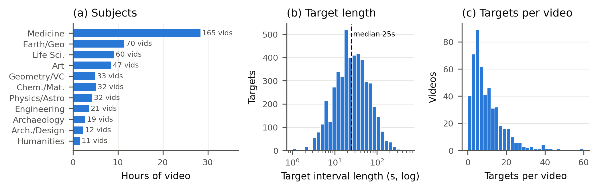
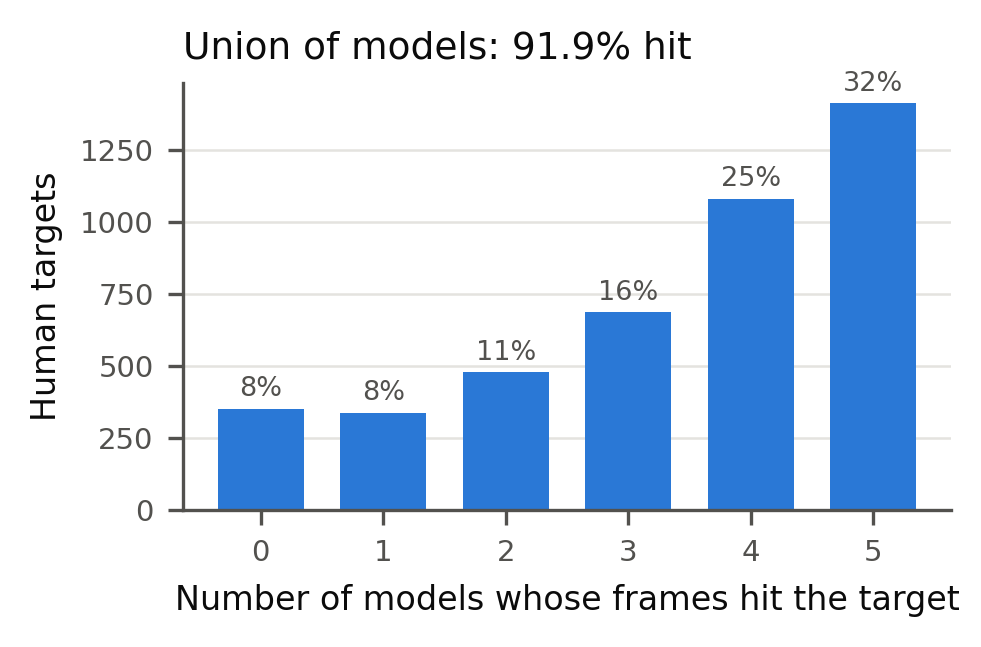
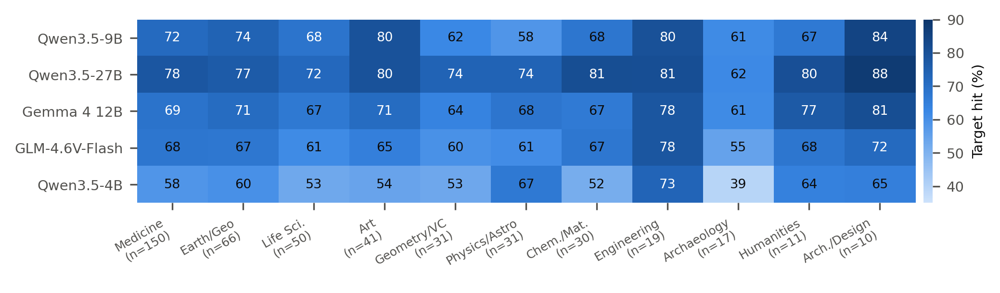

Educational videos contain scientific images, diagrams, artworks, and other visual evidence accompanied by spoken explanations. Turning this material into useful image–text pairs requires more than sampling frames: a system must identify informative visual content, locate its explanatory context, and avoid redundant or mismatched outputs. We study this problem through a browser-based collection framework that combines video navigation, visual inspection, segment localization, rendered-caption collection, and image–text verification. We also develop a human annotation interface and an evaluation protocol that separates agreement with human-selected moments from the semantic quality of the resulting pairs. The benchmark contains 502 videos (82 hours) spanning 11 subjects. Experiments compare multiple vision–language backbones using a fixed video list and agent protocol, with measurements of pair discovery, temporal localization, interaction behavior, and model-call cost.
How the agent watches
One loop, four decisions. Every step runs on the live browser — no pre-extracted frames, no transcript dumps.
Observe
Player screenshot, playhead and rendered captions.
Navigate
Planner + rule engine: skim, jump, look back, or start a segment.
Localize
Close the segment at a visual change; pick the most informative frame.
Verify
Keep the pair only if the frame and the narration teach the same thing.
Five backbones, one lecture
Pick a video and watch every backbone navigate it. Each lane replays the agent's real playhead; hover a dot to see the pair it saved.
A labeler that records how people watch
Annotators use the same player actions as the agent. Every skim, look-back and inspection is logged, so the benchmark captures both what people select and how they found it.
Skim & inspect
Jump ahead in fixed steps, then record whether the new visual is worth a closer look.
Interval pairs
Mark start and end, choose a representative frame, and judge whether the narration matches it.
Full trajectory log
Play, pause, seeks and decisions are timestamped and editable, giving a human reference for agent behavior.
Shared, conflict-free
Several annotators work on one label file; each video is saved independently.
502 lectures, 11 subjects
Human annotators watched every video with the same player controls and marked the segments worth turning into a teaching pair.

How many teaching moments does each backbone find?


Collected pairs
Image–text pairs saved by the agents inside human targets, each with the verifier's rationale. Click a card to open it.
@inproceedings{anonymous2027curating,
title = {Curating Educational Image--Text Pairs with Browser Agents},
author = {Anonymous},
booktitle = {Under review},
year = {2027}
}